參考資訊：
http://sweetlilmre.blogspot.com/2010/08/zipit-z2-z2_jtag.html?m=1
https://mozzwald.com/articles/using-a-raspberry-pi-as-a-z2_jtag-debugger-to-recover-a-bricked-zipit
早期的ARM CPU並没有預期使用者更新系統程式或者Bootloader程式，因此，一旦刷入錯誤的Bootloader程式，將會造成系統啟動失敗，機器就淪為變磚的命運，這時侯就只能使用JTAG介面，重新刷入系統式程救回，雖然目前Zipit Z2的UBoot已經相當完善，不太會有這樣的問題發生，不過司徒還是想要為既有的UBoot增加一些功能，因此，變磚的機會還是相當高，而為了將來變磚做準備，司徒只好先把腳位拉好，以備不時之需，為此，司徒還特地購買Olimex JTAG燒錄器，用以支援PAX270 CPU，後來才發現，Raspberry Pi開發板已經可以做為JTAG燒錄器使用，因此，打算研究Zipit Z2且還未購買JTAG燒錄器的使用者，司徒建議使用Raspberry Pi開發板當做JTAG燒錄器使用，畢竟可以一個開發板做為多種用途使用。司徒購買的Olimex JTAG燒錄器，如下圖：
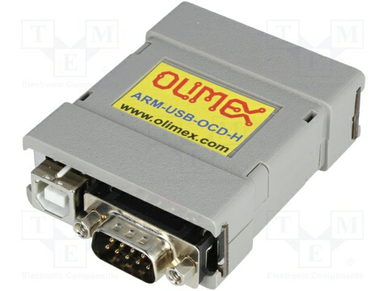
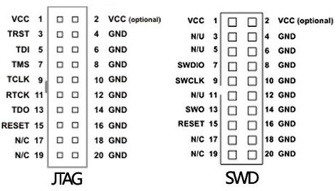
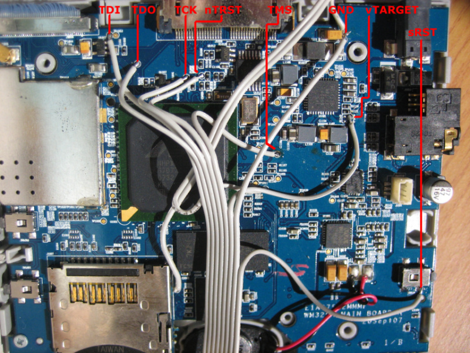
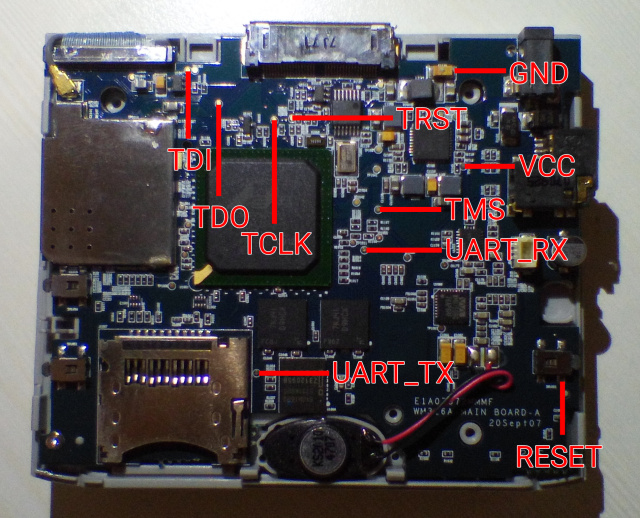
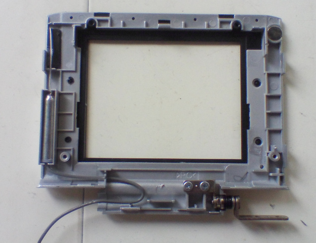
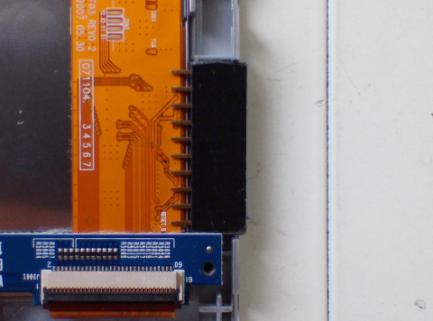
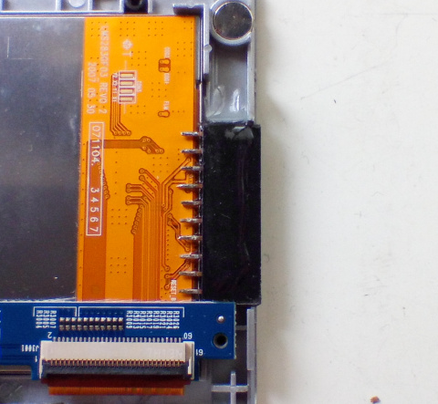
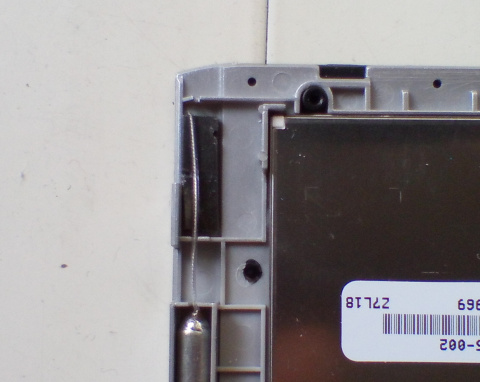
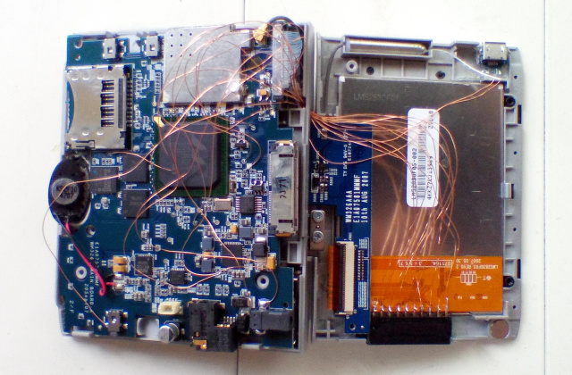
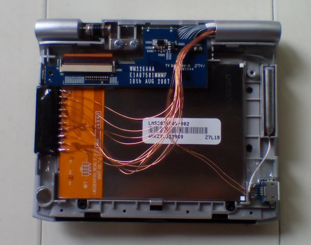
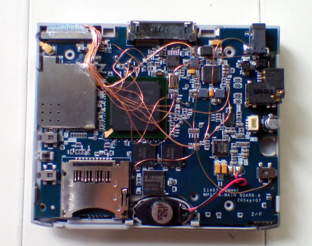
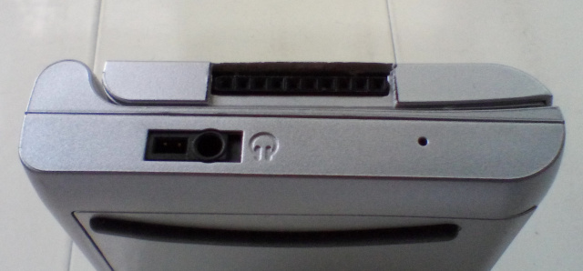
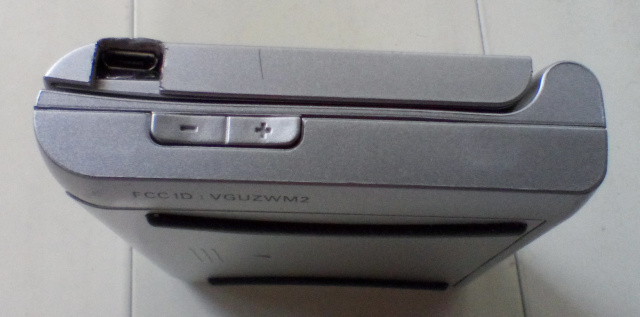
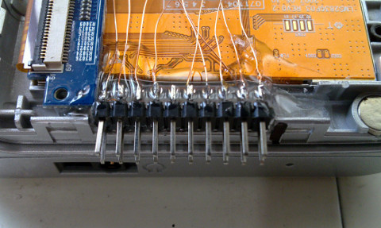
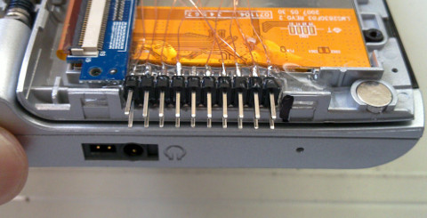
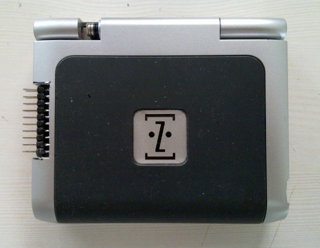